OUR LEADING PROFESSORS
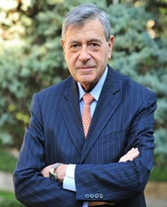
Pedro Nueno
Co-founder and Co-Dean
Honorary Dean of China Europe International Business School (European side). Bertrand Foundation Chair Professor of Entrepreneurship Management, IESE Business School, Spain. President (1993-2000) and Vice President (2000 - ) of International Management Institute. Doctor of Business Administration, Harvard University.
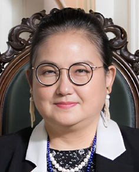
Liya Rong
Co-founder and Co-Dean (Executive)
American Weston Academy President , Renowned educator, translator, scholar, Rong Liya , Executive Dean and Co-Founder of the Boston International Business School, Former Special Advisor to the Presidents of Cornell University's Wisconsin-Madison Campus and Assistant President of Chongqing University. Graduated from Harvard Business School, Harvard Kennedy School of Government, and Harvard Law School.PhD from Michigan University, former professor at Peking University, and Michigan University, publisher of Harvard China Review, author of "Tax Competition in Developed and Developing Countries" and translator of "Mother of Innovation," "An Optimistic Heart," and "The Real Romney."
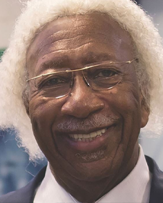
Marvin Gilmore
Director and Professor
Legendary lifelong entrepreneur, distinguished, humanitarian, political advisor. Honored World War II veteran, musician, and the founder of The Western Front. Co-founder of the Unity Bank and Trust Company in Roxbury in the late 1960s, the first Black-owned and operated commercial bank in Boston.
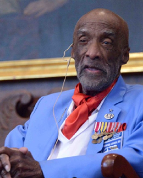
Brigadier General Enoch Woody Woodhouse, Jr.
Director, Professor and Special Advisor
Oldest living core member of the Tuskegee Airmen (the first African-American military aviators in the US Armed Forces) who contributed in World War II and the early integration of US Air Force. Trial Lawyer in Boston for more than 40 years. Congressional Gold Medal and Appointed Brigadier General. Member of the Ancient and Honorable Artillery Company of Massachusetts.
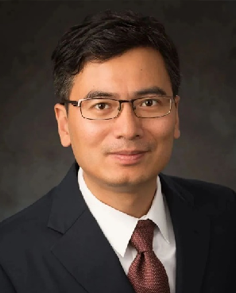
Kevin Chen
Vice Dean and Professor
Professor of New York University. Chief Economist of Horizon Financial. Co-Founder and Vice-Chairman of the Absolute Return Investment Management Association of China, and co-founder of the New York Financial Forum. PhD in Finance from the Financial Asset Management Engineering Center at University of Lausanne, Switzerland
Amy Chua
Professor
Professor of Law, Yale University. She has taught at Duke University, Columbia University, New York University and Stanford University. Served as Executive Editor of the Harvard Law Review. Author of Battle Hymn of the Tiger Mother, Day of Empire, World on Fire and The Golden Gate.
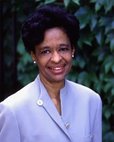
Lilith Haynes
Professor
Former Associate Dean of the Division of Continuing Education of Harvard University. PhD in linguistics from Stanford University. She is a top authoritative expert in the field of language education and globally reputed as a leading practitioner of cutting-edge concepts in language education. She had taught and led the operation of the Summer School program of Harvard University for more than 20 years.
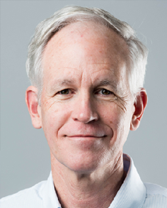
Jim Dougherty
Professor
Senior Lecturer in Technological Innovation, Entrepreneurship, and Strategic Management at the MIT Sloan School of Management; Adjunct Senior Fellow for Business and Foreign Policy at the Council on Foreign Relations. He has extensive experience working directly with investors to execute highly successful turnarounds of troubled companies. He has stabilized and recapitalized such companies as Gartner, IntraLinks, Prodigy, and Small Business ISP.
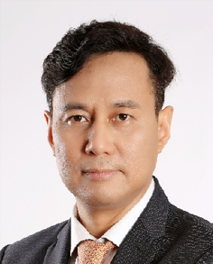
Huang Haifeng
Professor
Research Fellow of the Woodrow Wilson International Center for Scholars. United Nations Global Compact, Member of the Board of Principles for Responsible Management Education. Former professor and Assistant Dean at Peking University HSBC Business School. He received a PhD from Humboldt University of Berlin in Germany. His research fields include economic transformation, sustainable development of regional economy, green economy and finance.
Eric Roy Davenport
Professor
International Trade Expert specializing in Supply Chain Management. His expertise lies in fostering seamless cross-border transactions, mitigating risks, and enhancing operational efficiency. His dedication to staying abreast of evolving trade dynamics positions him as a trusted advisor in the ever-changing landscape of international commerce.
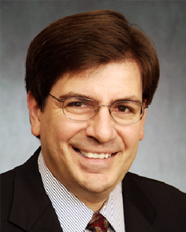
Michael J. Macaluso
Professor
Managing Partner of the Macaluso LLP. He has a long track record for successfully managing large, innovative, and complex transactions, investments, and projects for some of the world's leading institutions and middle-market companies, including GMAC, Cargill, Wells Fargo, and HSBC. Mr. Macaluso also taught capital markets as an adjunct professor at the University of Minnesota Law School for over a decade.
Lu Zhou
Professor
Founder and President of VanQuour Global Wealth Management. She has worked in private equity for more than a decade and raised fundings for businesses including the largest gigafactory in New York State. She is passionate about bespoke wealth planning for families and businesses, with a global, socially impactful outlook on diversified investing.
James D. Noteware
Professor
CEO of Noteware Advisors; Former Director of the Department of Housing and Community Development, City of Houston, Texas; Rose Fellow, 2010-2011, Urban Land Institute Daniel Rose Center. For nearly 50 years, Mr. Noteware has specialized in the development of real estate and the value-added turn-around of properties, portfolios and the organizations that manage them, both private and public.
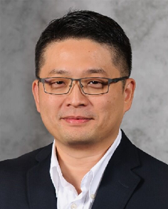
James Liu
Professor
President & Co-Founder of HASSE (Houston Association for Space and Science Education). As a visionary entrepreneur transforming space education globally for 20 years, he advocates for STEM learning through the acclaimed “HASSE Space School”, empowering youth with vision, igniting their passion, and instilling the courage to dream. He received both the Special Contribution Award from the US House of Representatives and the Houston Innovative Education Impact Award in 2023.
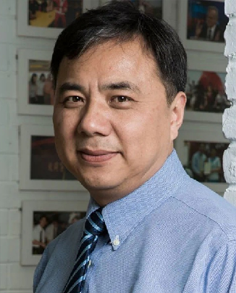
Fu Wenge
Professor
Director of the MBA Education Center at China Agricultural University. Served as the President of Huaxi Hope Group in China (2005-2011), one of the most prominent companies in the agrifood industry. Prof. Fu is a leading expert in the field of agribusiness management and one of the leading founders of agribusiness MBA education in China.
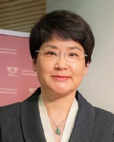
Bingling Luo
Professor
General Manager of the Beijing Sandwich Food Company Co.Ltd. Co-founder and President of the American Academy of Chinese and International Culinary Arts and Hospitality Management (AACICH). She has been leading the development, promotion and management of the world-leading multinational fast food restaurant franchise, Subway, in China.
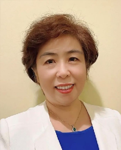
Li Li
Professor
Co-founder and President of American Academy of Wealth Management. She has been honored in wealth management and related business education in the US. She was also honored as “Rookie of the Year” by professional American journal in credit and wealth management.
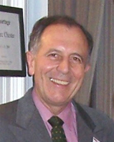
Friedrich Löhr
Professor
Senior diplomat with 37-year career in diplomacy and international relations. German Envoy and Permanent Representative of the Ambassador to China (2002-2005); German Ambassador to North Korea (2005-2007); German Consul General in Boston, US (2008-2012). Visiting Professor at Suffolk University and a Research Fellow of the Weatherhead Center for International Affairs at Harvard University.
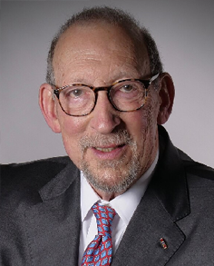
John R. Price
Professor
Co-Chairman, President, CEO and co-founder of Greffex, Inc. and President of the Institute of Therapeutic Biology. As a decorated Viet Nam veteran, he was a senior fellow at the Centre for Business and Government at the John F. Kennedy School of Government at Harvard University. He has over 35 years experience in operations, management and finance. Prior to founding Greffex, Mr. Price was Partner at Deloitte & Touche, ran his own accounting and investment banking firms, was a Managing Director at American Express, and was Chief Operating Officer of Goran Capital, a billion-dollar public insurance company.
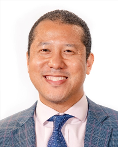
Earl Carr
Professor
Founder and the CEO of CJPA Global Advisors based in New York. Specializations include: Chinese Foreign Policy, Sino-US Relations, Semiconductors, Global Supply Chain Analysis, Global Trade, Risk Management, Geo-political analysis, and ESG. Adjunct Instructor at the Center for Global Affairs of New York University. Board Member of The Association for Diplomatic Training & Studies, member of The National Committee on US-China Relations (NCUSCR). With 25+ years of experience, Earl manages the Global Research Team and guides the firm’s global thought leadership and cross-border business development mandate. He held positions at Morgan Stanley, HSBC Bank, McKinsey & Co, Council on Foreign Relations. He received the 2023 ICAP Diversity Award.
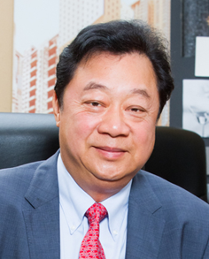
John Lam
Professor
John Lam is Chairman and Chief Executive Officer of Lam Group. He is well known in New York’s fashion, hotel and real estate industry. Prior to real estate, John started out in the fashion and garment industry, where he founded the Lam Group Fashion Group in 1970.
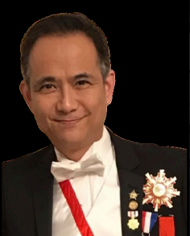
Gary Kong
Professor
Entrepreneur, philanthropist, and Nobel Peace Prize Nominee 2025. Dedicated to promoting sustainable development, responsible leadership, and global education through impactful initiatives merging business and technology.
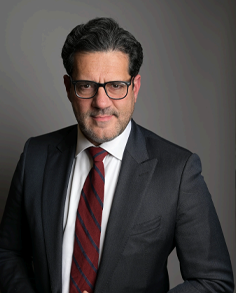
Dr. David Sans
Professor
Renowned finance expert, investor, and strategist. Specializes in global capital markets, venture innovation, and economic forecasting, helping bridge finance, entrepreneurship, and transformative investment trends worldwide.
Margareth Johana Gonzalez Avila
Professor
One of the world’s leading finance and trade experts, spoke at the FX Summit 2024 in Dubai, participating in the “Women Leaders in Finance” panel, where she inspired future generations and advocated for women’s empowerment in global finance.
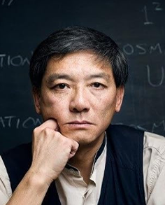
Leong Ying
Professor
Visionary physicist and author known for the “Twin Universe” concept. Combines science, philosophy, and creativity to expand human understanding of the universe and inspire intellectual curiosity.
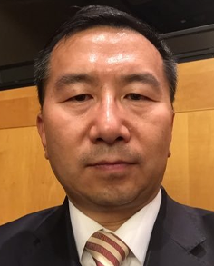
Yunlong Zhao
Professor
Technology strategist and innovation advocate. Integrates ancient Sun Tze principles with modern business strategy to inspire resilient, future-ready enterprises focused on creativity, ethics, and sustainable growth.
Angie Wong
Professor
Angie Wong, a Columbia Journalism graduate and Miami Republican Committeewoman, is a political commentator appearing on Newsmax, Fox News, CNN, BBC, and Sky News, providing insightful analysis on U.S. politics, foreign policy, and national strategy.
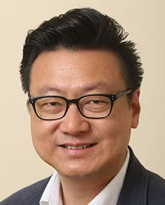
David Chen
Professor
David Chen, founder of Princeton Venture Studio, empowers Harvard and Princeton researchers to launch impactful ventures. He also founded AngelVest Fund and serves on the Harvard Business School Alumni Angels board, promoting mindful, purpose-driven entrepreneurship and global innovation.
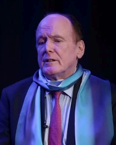
Michael J. Daly
Professor
Michael J. Daly III, CEO of AMARAMCO Limited and Nobel Prize Nominee (2020–2024), leads global innovation in zero-emission fuels and petroleum products, advancing sustainable energy solutions across the Americas, Asia, Europe, and the Middle East.
Elvis Newman
Professor
Elvis Newman, a renowned motivational and futurist speaker from New York, inspires audiences with visionary insights on technology, society, and self-growth, encouraging strategic foresight, personal transformation, and the pursuit of a brighter, more enlightened future for humanity.
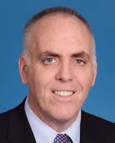
Ed Flynn
Professor
Edward Flnn is a prominent leader and social activist in the Boston area who has made long-standing contributions to the local community. He has served as a Probation Officer at Suffolk Superior Court, a public safety officer for the Commonwealth of Massachusetts, and a legislative affairs specialist at the US. Department of Labor under President Clinton, where he worked to expand access to affordable health care and increase the federal minimum wage. He has consistently been a strong pillar in programs for early intervention, rehabilitation and reentry services, as well as counseling. Earlier in his life he served 25 years in the U.S. Navy. He is a graduate of Salve Regina University. In 2023, during his tenure as President of the Boston City Council, he led the Council in unanimously passing legislation designating Lunar New Year as an official holiday.
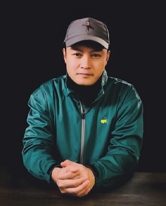
Bing He
Professor
Professor Binghe is a pioneering interdisciplinary figure who bridges literature, technology, and education. He is a bestselling novelist, AI visual artist, and educator, known for works such as Homeless, The Apostle, and AI Apocalypse. He serves as a visiting professor at the California Institute of Technology and is among the world’s earliest creators to use generative AI for film production. His 120-minute AI film Wolves, exhibited at Broadway, Harvard University, and other venues, has generated wide acclaim. In New York, he founded Binghe AI ARTs+Tech, a studio dedicated to AI-driven film production and IP industrialization. As an educator, he integrates creative expression, AI technology, and business education to develop forward-looking training models for the next generation of art-and-tech talent.
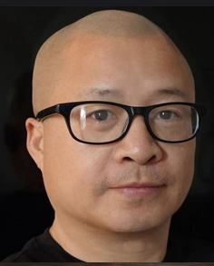
YoYo (Wei) Xiao
Professor
Professor Xiao Wei (YoYo Xiao) is a Chinese contemporary artist whose work spans painting, digital media, and AI-driven creation. Educated at the Central Academy of Fine Arts, Pratt Institute, and the University of Barcelona, he moved to the U.S. in 1996 and later pioneered the “Silicon–Carbon Hyper-Fusion” system—now in its nineteenth iteration—a human–AI co-creation framework grounded in his belief that technology is a creative subject. His AI paintings and video installations have been exhibited at the Metaverse Art Exhibition in Venice (2022–2024), the Jinan International Biennale, and the “AI Is Here” exhibition in Dongguan. He designed the 2022 China–Germany diplomatic gift, and in 2024 his work achieved the top sale at Rongbaozhai’s AIGC Online Art Auction.
Julia Loh
Visiting Professor
Julia Loh serves as Director of the Harvard International Medical Innovation Center and Co–Executive Chair of the World Development Foundation. In the United States, she co-founded the Global Longevity Naturopathy Research Institute and several biomedical research institutions affiliated with U.S. companies. She previously worked as a Senior Scientist at the U.S. National Cancer Institute (NCI), where her research focused on cloning, stem cells, and in vitro fertilization (IVF). She also possesses extensive professional experience in GMP-compliant large-scale production and management of cells and biological products. She is a founder and Vice President of the Hong Kong China Institute of Immunology, Longevity, Anti-Aging, and Microbiome Research.
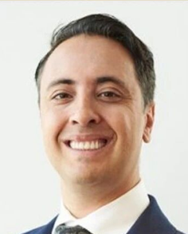
James A. Wolff
Visiting Professor
James A. Wolff advises entrepreneurs, investors, and domestic and international companies on corporate, legal, and financial matters throughout the business lifecycle. His practice covers business structuring, cross-border transactions, mergers and acquisitions, regulatory compliance, venture capital, private equity, secured financing, and investment fund formation. He works across cutting-edge industries including commercial space, blockchain and cryptocurrency, artificial intelligence, robotics, renewable energy, health sciences, and Web3 technologies. A frequent lecturer at business and emerging technology forums, James is a member of leading New York bar associations, an Executive Board Member of the United Nations Association, and a Director of the National Space Society. He is widely recognized for excellence in business and corporate law. James is a Martindale-Hubbell Gold Client Champion, 2017-2023; The American Registry Client Champion Gold Award, 2018 through 2022; has been received the 2023 American Registry America’s Most Honored Lawyers Award, Metro New York Super Lawyers Rising Stars Business and Corporate Law Award from 2020 through 2024.
H. Caleb Simmons
Visiting Professor
H. Caleb Simmons is a writer, startup organizer, and blockchain enthusiast with a background in politics. His work focuses on secure technology products, impact investing, and driving positive global change. He is also a frequent public speaker.
Greg Lakis
Visiting Professor
Greg Lakis is a seasoned IT industry professional with over two decades of experience in sales and business development since 1999. Since 2010, he has served as Director of Business Development at LincolnIT, overseeing account strategy, market research, client acquisition, and financial performance, including monthly P&L management. Previously, he held senior sales leadership roles at NTT/Verio, Manchester Equipment, Lincoln Computer Services, and Computer Network Solutions, where he led sales and business development for the New York office. Greg is known for exceeding client expectations and maximizing deal registrations and rebates. He has served as a keynote speaker at industry forums and is President of LINE, Long Island Networking Executives.
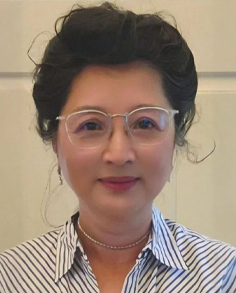
Helen Hsu
Visiting Professor
Helen Hsu, MD, MS is an MD Executive Board Member with 30+ years of experience in US and China spanning Pharma, Biotech, Academia and Clinical Practice with therapeutic expertise in Oncology, Hematology, Neurology, Cardiology, Women’s Health, Translational Research, OTC drugs and wellness nutrition products. A visionary leader in research programs development, IND/NDA submissions, global clinical research development, medical affairs, regulatory pathways & IRB. A strategy advisor for medicine life cycle management, business development and entrepreneurship. An influential team builder and community supporter.
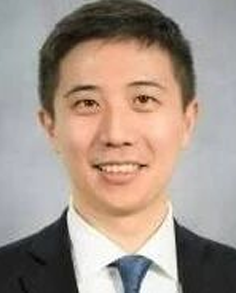
Shawn Du
Visiting Professor
Shawn Du is an excellent oncologist and biologist. He led strategic real-world evidence lung cancer partnerships with leading community and academic oncology institutions, generating customer-centric data to demonstrate the value of Rybrevant and Johnson & Johnson solid tumor assets for strategic stakeholders and population health decision-makers. He graduated from Princeton University and the Johns Hopkins University, with a Ph.D. degree in Health Economics and Policy.
Mark Kirschbaum
Visiting Professor
Mark Kirschbaum, M.D. is a physician-scientist and biopharmaceutical executive with more than 30+ years of experience spanning academic medicine, clinical research, and pharmaceutical drug development. He founded and serves as President of Midtown Biopharma Consulting, LLC which provides strategic consulting in biopharma and drug discovery, and also as Chief Medical Officer at Tethra Biosciences. He had also served as Chief Medical Officer at CBCC Global Research.
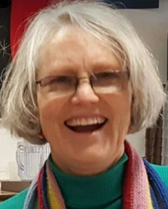
Sally Jones
Visiting Professor
Sally Jones has devoted her life for peace. For over a decade, she had led Peace Action Fund of New York State, the state-affiliate of Peace Action, the nation’s largest grassroots peace advocacy organization. As a leader of the National Peace Act Organization, she has testified at the United Nations and before the New York City Council on nuclear disarmament and human rights since college. Her work calls for action grounded in hope and responsibility.
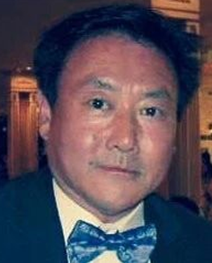
Jimmy Chue
Visiting Professor
Before founding Amer Asia Euro International Press, Jimmy Chue's Wall Street career spans for more than three decades. Working with prestiges firms such as Merrill Lynch and Prudential Securities as a senior analysis of operations. Founding Member and CIO of Healthier2gether, Senior Partner at Silver Bear Capital, and Cofounder of a new entity in formation named World Global Partners Inc. Jimmy Chue is a representative of the 3rd-generation Chinese immigrants in North America. He has unique reflections on personal lessons learned as a 3rd-generation immigrant, sharing insights on identity, perseverance, leadership, and crosscultural experience shaping a global professional journey.